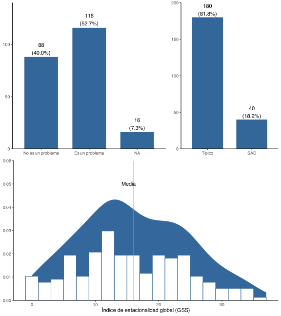
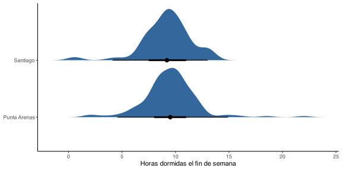
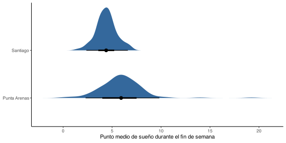

Código
DT::datatable(sleep)Los análisis fueron realizados usando el lenguaje de programación estadística R (versión 4.4.1). Se implementaron estadísticos descriptivos, comparativos y correlacionales paramétricos sobre el conjunto de datos evaluados, posterior a la evaluación analítica y gráfica de las propiedades distribucionales de la muestra analizada, considerando del mismo modo el tamaño muestral final de 220 individuos.
DT::datatable(sleep)Los datos analizados consisten en 220 individuos, de los cuales 129 (58.6%) son de la región de Magallanes y Antártica Chilena y 91 (41.4%) de la región Metropolitana.
De estos individuos, al evaluar los resultados de los instrumentos específicos, observamos en el índice de calidad de sueño de Pittsburgh que 149 (67.7%) sujetos presentan un mal dormir, entendido como un puntaje global mayor a 5, con un puntaje mayor indicando peor calidad de sueño. Por otro lado, solo 60 (27.3%) personas presentaron un buen dormir bajo los estándares del instrumento evaluado.
plot_frq(sleep, psqi_cat, show.na = T) +
labs(x = NULL)En relación al puntaje de matutinidad, observamos puntajes que oscilaron entre los 4 a los 24 puntos, con una mediana y media en 14 y 14.1 puntos respectivamente, con el 50% de la muestra entre los 12 a los 16 puntos.
ggplot(sleep, aes(ho_score)) +
stat_density(outline.type = "full", fill = "#34689C") +
geom_histogram(mapping = aes(y = after_stat(density) / 2),
binwidth = 1, fill = "white", col = "#34689C") +
geom_vline(xintercept = mean(sleep$ho_score, na.rm = TRUE),
linetype = 1, col = "darkorange") +
annotate(geom = "text", x = 15.25, y = 0.125, label = "Media") +
scale_y_continuous(expand = c(0,0,0,0.01)) +
labs(y = "Densidad", x = "Puntaje de Matutinidad")En el caso del cuestionario de cronotipo de Munich, observamos que las horas de sueños de los participantes en los días de semana osciló entre los 49 minutos a las 14 horas de sueño, con el 50% de los participantes durmiendo entre 6 a 7.9 horas, con 6.9 horas de media. Por otor lado, durante el fin de semana las horas de sueño oscilaron entre 30 minutos y 16 horas, con el 50% de los participantes durmiendo entre 8 a 10.5 horas, con 9.3 horas de media durante el fin de semana. Al evaluar la diferencia de horas de sueño entre el dia de semana y el fin de semana, observamos que el 50% de los participantes duerme entre 1 a 3.5 horas más el fin de semana, con una media de 2.35 horas más de sueño comparado con los días de semana.
melt(data = sleep,
id.vars = "id",
measure.vars = c("munich_horas_semana",
"munich_horas_finde",
"munich_horas_diff")) |>
ggplot(aes(value, variable)) +
geom_vline(xintercept = seq(-7.5, 15, by = 5), alpha = .1, lwd = 0.5) +
geom_vline(xintercept = seq(-7.5, 15, by = 2.5), alpha = .05, lwd = 0.5) +
tidybayes::stat_halfeye(aes(fill = after_stat(x > 0)), show.legend = FALSE, density = "unbounded") +
scale_y_discrete(name = NULL,
labels = c("Día de la semana",
"Fin de semana",
"Diferencia"),
expand = c(0,0.1)) +
labs(x = "Horas de sueño") +
scale_x_continuous(n.breaks = 10) +
scale_fill_brewer(type = "qual", palette = 7, direction = -1) +
annotate(geom = "text", x = -.2, y = 2.9, label = "Peor sueño el fin de semana",
hjust = 1, col = "darkred") +
annotate(geom = "text", x = .2, y = 2.9, label = "Mejor sueño el fin de semana",
hjust = 0, col = "darkgreen")En relación a los resultados obtenidos del cuestionario de perfil estacional infanto-juvenil, observamos que los punatajes oscilaron entre los 0 a los 37 puntos, el 50% de la muestra puntuó entre 10 a 22 puntos y la puntuación media fue de 16.1 puntos. De la muestra evaluada, observamos que 116 (52.7%) participantes calificaron la estacionalidad y sus efectos como un problema, mientras que 88 (40%) participantes no lo percibieron como tal. Finalmente, observamos que solo 40 (18.2%) individuos del total de la muestra evaluada cumplen con los criterios del instrumento para desorden afectivo estacional (SAD), mientras que 180 (81.8%) participantes estarían catalogados con un puntaje típico.
a <- ggpubr::ggarrange(plotlist = plot_frq(sleep, spaq_problema_cat, spaq_sad_cat, show.na = TRUE, axis.title = c("")), widths = c(3,2))
b <- ggplot(sleep, aes(spaq_gss)) +
stat_density(outline.type = "full", fill = "#34689C", ) +
geom_histogram(mapping = aes(y = after_stat(density) / 2),
binwidth = 2, fill = "white", col = "#34689C") +
geom_vline(xintercept = mean(sleep$spaq_gss, na.rm = TRUE),
linetype = 1, col = "darkorange") +
annotate(geom = "text", x = 15.25, y = 0.05, label = "Media") +
scale_y_continuous(expand = c(0,0,0,0.01)) +
labs(y = NULL, x = "Índice de estacionalidad global (GSS)")
ggpubr::ggarrange(a, b, nrow = 2, ncol = 1)
Al comparar los diferentes índices relacionados con el sueño entre regiones, observamos una diferencia estadísticamente significativa en el puntaje total de la escala de cronotipo, en donde la región de Magallanes puntuó 1.23 puntos menos que la región metropolitana (CI~95%~[-2.22, -0.25], p = 0.015).
t.test(ho_score ~ comuna, sleep, var.equal = F) # *
Welch Two Sample t-test
data: ho_score by comuna
t = -2.4648, df = 188.99, p-value = 0.0146
alternative hypothesis: true difference in means between group Punta Arenas and group Santiago is not equal to 0
95 percent confidence interval:
-2.2163619 -0.2458474
sample estimates:
mean in group Punta Arenas mean in group Santiago
13.5814 14.8125 ggplot(sleep, aes(ho_score, comuna)) +
ggdist::stat_halfeye(density = "unbounded", trim = FALSE, fill = "#34689C",
point_interval = ggdist::mean_qi) +
labs(x = "Puntaje de cronotipo", y = NULL)Al comparar si las horas dormidas los días de la semana eran diferentes entre regiones, no observamos diferencias significativas.
t.test(munich_horas_semana ~ comuna, sleep, var.equal = FALSE) # ns
Welch Two Sample t-test
data: munich_horas_semana by comuna
t = -0.37375, df = 184.08, p-value = 0.709
alternative hypothesis: true difference in means between group Punta Arenas and group Santiago is not equal to 0
95 percent confidence interval:
-0.5161692 0.3517533
sample estimates:
mean in group Punta Arenas mean in group Santiago
6.877907 6.960115 ggplot(sleep, aes(munich_horas_semana, comuna)) +
ggdist::stat_halfeye(density = "unbounded", trim = FALSE,
fill = "#34689C", point_interval = ggdist::mean_qi) +
labs(x = "Horas dormidas en la semana", y = NULL)La cantidad de horas dormidas los fin de semana tampoco mostraron diferencias significativas entre regiones.
t.test(munich_horas_finde ~ comuna, sleep, var.equal = FALSE) # ns
Welch Two Sample t-test
data: munich_horas_finde by comuna
t = 0.91959, df = 197.96, p-value = 0.3589
alternative hypothesis: true difference in means between group Punta Arenas and group Santiago is not equal to 0
95 percent confidence interval:
-0.3492099 0.9594733
sample estimates:
mean in group Punta Arenas mean in group Santiago
9.505208 9.200077 ggplot(sleep, aes(munich_horas_finde, comuna)) +
ggdist::stat_halfeye(density = "unbounded", trim = FALSE, fill = "#34689C",
point_interval = ggdist::mean_qi) +
labs(x = "Horas dormidas el fin de semana", y = NULL)
Tampoco se observaron diferencias entre la difrencia de horas dormidas el fin de semana vs los días de la semana al comparar entre regiones.
t.test(munich_horas_diff ~ comuna, sleep, var.equal = FALSE) # ns
Welch Two Sample t-test
data: munich_horas_diff by comuna
t = 1.1036, df = 211.66, p-value = 0.271
alternative hypothesis: true difference in means between group Punta Arenas and group Santiago is not equal to 0
95 percent confidence interval:
-0.299148 1.060110
sample estimates:
mean in group Punta Arenas mean in group Santiago
2.620443 2.239962 ggplot(sleep, aes(munich_horas_diff, comuna)) +
ggdist::stat_halfeye(density = "unbounded", trim = FALSE, fill = "#34689C",
point_interval = ggdist::mean_qi) +
labs(x = "Diferencia de horas dormidas en fin de\nsemana vs día de la semana",
y = NULL)Al comparar el punto medio de sueño durante el fin de semana, observamos que aquellos en la región de Magallanes, experimentan un punto medio de sueño mucho más tarde comparado con sus contrapartes de la región metropolitana.
t.test(munich_msfc ~ comuna, sleep, var.equal = FALSE) # ***
Welch Two Sample t-test
data: munich_msfc by comuna
t = 6.6933, df = 190.42, p-value = 2.375e-10
alternative hypothesis: true difference in means between group Punta Arenas and group Santiago is not equal to 0
95 percent confidence interval:
1.076178 1.975493
sample estimates:
mean in group Punta Arenas mean in group Santiago
5.920312 4.394477 ggplot(sleep, aes(munich_msfc, comuna)) +
ggdist::stat_halfeye(density = "unbounded", trim = FALSE, fill = "#34689C",
point_interval = ggdist::mean_qi) +
labs(x = "Punto medio de sueño durante el fin de semana",
y = NULL)
Pese a lo anterior, al comparar el punto medio de sueño durante los días de semana entre regiones, observamos que aquellos en la región de Magallanes, experimentan un punto medio de sueño más temprano comparado con sus contrapartes de la región metropolitana.
t.test(munich_mswc ~ comuna, sleep, var.equal = FALSE) # ***
Welch Two Sample t-test
data: munich_mswc by comuna
t = -6.219, df = 195.73, p-value = 2.968e-09
alternative hypothesis: true difference in means between group Punta Arenas and group Santiago is not equal to 0
95 percent confidence interval:
-0.9579896 -0.4966845
sample estimates:
mean in group Punta Arenas mean in group Santiago
2.928424 3.655761 ggplot(sleep, aes(munich_mswc, comuna)) +
ggdist::stat_halfeye(density = "unbounded", trim = FALSE, fill = "#34689C",
point_interval = ggdist::mean_qi) +
labs(x = "Punto medio de sueño durante la semana",
y = NULL)
Los hallazgos observados anteriormente no se limitan únicamente al punto de sueño medio, sino que al comparar el jetlag social, observamos que la región de Punta Arenas experimentó un puntaje más elevado en este dominio comparado con aquellos en la región metropolitana.
t.test(munich_sjlc ~ comuna, sleep, var.equal = FALSE) # ***
Welch Two Sample t-test
data: munich_sjlc by comuna
t = 12.205, df = 207.91, p-value < 2.2e-16
alternative hypothesis: true difference in means between group Punta Arenas and group Santiago is not equal to 0
95 percent confidence interval:
2.394662 3.317338
sample estimates:
mean in group Punta Arenas mean in group Santiago
2.9963542 0.1403544 ggplot(sleep, aes(munich_sjlc, comuna)) +
ggdist::stat_halfeye(density = "unbounded", trim = FALSE, fill = "#34689C",
point_interval = ggdist::mean_qi) +
labs(x = "Punto medio de sueño durante la semana",
y = NULL)Finalmente, y al comparar entre regiones los puntajes obtenidos en el índice de estacionalidad global, tampoco observamos diferencias singificativas.
t.test(spaq_gss ~ comuna, sleep, var.equal = FALSE) # ns
Welch Two Sample t-test
data: spaq_gss by comuna
t = -0.82719, df = 167.04, p-value = 0.4093
alternative hypothesis: true difference in means between group Punta Arenas and group Santiago is not equal to 0
95 percent confidence interval:
-3.498962 1.432683
sample estimates:
mean in group Punta Arenas mean in group Santiago
15.65517 16.68831 ggplot(sleep, aes(spaq_gss, comuna)) +
ggdist::stat_halfeye(density = "unbounded", trim = FALSE, fill = "#34689C",
point_interval = ggdist::mean_qi) +
labs(x = "Índice de estacionalidad global (GSS)", y = NULL)En relación a la sensibilidad estacional, no se observó una asociación significativa entre el estado de severidad autopercibida de la sensibilidad estacional.
with(sleep, table(comuna, spaq_problema_cat)) |> chisq.test()
Pearson's Chi-squared test with Yates' continuity correction
data: with(sleep, table(comuna, spaq_problema_cat))
X-squared = 0.062537, df = 1, p-value = 0.8025Un efecto similar pudo observarse en relación al criterio de SAD entre comunas, en donde se destacó una falta de evidencia a favor de una asociación.
with(sleep, table(comuna, spaq_sad_cat)) |> chisq.test()
Pearson's Chi-squared test with Yates' continuity correction
data: with(sleep, table(comuna, spaq_sad_cat))
X-squared = 0.13769, df = 1, p-value = 0.7106Sin embargo, al examinar la categoría de calidad de sueño del índice de Pittsburgh, observamos una asociación entre la región y el mal dormir, lo que pareciera sugerir que las personas de la región de Magallanes experimentan un mal dormir en mayor proporción que aquellas personas de la región Metropolitana.
with(sleep, table(comuna, psqi_cat)) |> chisq.test()
Pearson's Chi-squared test with Yates' continuity correction
data: with(sleep, table(comuna, psqi_cat))
X-squared = 5.6158, df = 1, p-value = 0.0178plot_xtab(sleep$comuna, sleep$psqi_cat, bar.pos = "stack", margin = "row")En términos de correlaciones, observamos una correlación significativa entre el puntaje de cronotipo y las horas dormidas durante la semana (r = 0.29, p < 0.001), pero no las horas dormidas durante el fin de semana (r = 0.08, p = 0.230). Se observa una correlación inversa entre el puntaje de cronotipo y los puntos medios de sueño, tanto durante la semana como el fin de semana, al igual que con el jetlag social. Se observan correlaciones entre los dominios de sueño de la escala de Munich. No se observaron correlaciones significativas entre ninguno de los dominios de sueño con variables de sensibilidad estacional.
correlation::correlation(sleep[,-2L], p_adjust = "none", method = "pearson")# Correlation Matrix (pearson-method)
Parameter1 | Parameter2 | r | 95% CI | t | df | p
--------------------------------------------------------------------------------------------
ho_score | munich_horas_semana | 0.29 | [ 0.16, 0.41] | 4.41 | 205 | < .001***
ho_score | munich_horas_finde | 0.10 | [-0.04, 0.23] | 1.41 | 204 | 0.160
ho_score | munich_horas_diff | -0.08 | [-0.22, 0.05] | -1.18 | 204 | 0.239
ho_score | munich_msfc | -0.35 | [-0.47, -0.23] | -5.42 | 204 | < .001***
ho_score | munich_mswc | -0.29 | [-0.41, -0.16] | -4.28 | 205 | < .001***
ho_score | munich_sjlc | -0.16 | [-0.29, -0.03] | -2.38 | 204 | 0.018*
ho_score | spaq_gss | -0.12 | [-0.26, 0.03] | -1.58 | 184 | 0.115
munich_horas_semana | munich_horas_finde | 0.20 | [ 0.07, 0.33] | 3.00 | 213 | 0.003**
munich_horas_semana | munich_horas_diff | -0.42 | [-0.52, -0.30] | -6.67 | 213 | < .001***
munich_horas_semana | munich_msfc | -0.20 | [-0.32, -0.07] | -2.96 | 213 | 0.003**
munich_horas_semana | munich_mswc | -0.32 | [-0.44, -0.20] | -4.97 | 214 | < .001***
munich_horas_semana | munich_sjlc | -0.07 | [-0.21, 0.06] | -1.08 | 213 | 0.284
munich_horas_semana | spaq_gss | -0.12 | [-0.26, 0.02] | -1.65 | 189 | 0.100
munich_horas_finde | munich_horas_diff | 0.81 | [ 0.76, 0.85] | 19.96 | 213 | < .001***
munich_horas_finde | munich_msfc | 0.32 | [ 0.19, 0.43] | 4.87 | 213 | < .001***
munich_horas_finde | munich_mswc | -0.04 | [-0.18, 0.09] | -0.64 | 213 | 0.520
munich_horas_finde | munich_sjlc | 0.34 | [ 0.21, 0.45] | 5.23 | 213 | < .001***
munich_horas_finde | spaq_gss | -0.06 | [-0.20, 0.08] | -0.83 | 188 | 0.410
munich_horas_diff | munich_msfc | 0.41 | [ 0.30, 0.52] | 6.63 | 213 | < .001***
munich_horas_diff | munich_mswc | 0.15 | [ 0.02, 0.28] | 2.25 | 213 | 0.025*
munich_horas_diff | munich_sjlc | 0.36 | [ 0.23, 0.47] | 5.58 | 213 | < .001***
munich_horas_diff | spaq_gss | 0.02 | [-0.13, 0.16] | 0.22 | 188 | 0.827
munich_msfc | munich_mswc | 0.11 | [-0.03, 0.24] | 1.55 | 213 | 0.124
munich_msfc | munich_sjlc | 0.84 | [ 0.79, 0.87] | 22.34 | 213 | < .001***
munich_msfc | spaq_gss | -0.09 | [-0.23, 0.05] | -1.26 | 188 | 0.211
munich_mswc | munich_sjlc | -0.33 | [-0.45, -0.21] | -5.16 | 213 | < .001***
munich_mswc | spaq_gss | 0.12 | [-0.02, 0.26] | 1.63 | 189 | 0.106
munich_sjlc | spaq_gss | -0.10 | [-0.24, 0.04] | -1.39 | 188 | 0.165
p-value adjustment method: none
Observations: 186-216